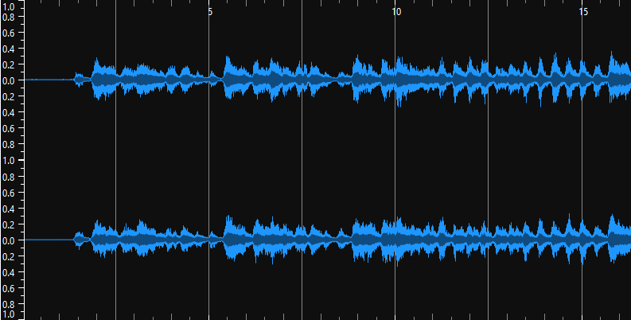

Task Overview
This week, we explore the power of **time-frequency analysis** by analyzing three pieces of Mozart-related music using **Sonic Visualizer**. The goal is to compare the **waveform** to the **spectrogram** and understand the advantages of using spectrograms for deeper analysis.
Generated Waveforms and Spectrograms
Below are the waveforms and spectrograms generated for the selected Mozart pieces:
Piece 1: [Title of Mozart Piece 1]
Piece 2: [Title of Mozart Piece 2]

Piece 3: [Title of Mozart Piece 3]

Analysis: Time-Frequency Analysis vs. Waveform Analysis
Time-frequency analysis, such as spectrograms, offers more information compared to traditional waveform analysis. While waveforms only show the amplitude of the signal over time, spectrograms provide both frequency and amplitude, offering a richer representation of the sound. Spectrograms allow us to visualize complex interactions between frequencies, highlighting nuances that are invisible in waveforms. This can reveal patterns, harmonics, and subtle shifts that can be crucial for music analysis, particularly in pieces like Mozart's compositions where intricate harmonic relationships are present.